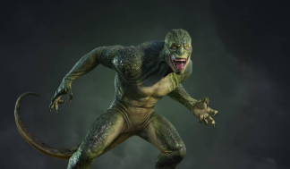

SUPER VILINS
Ce n'est jamais blanc ou noir, méchant ou gentil!
Denis Carredine
- Identité :
- Inspiré du Cambrioleur
- Capacités :
- Humains sans caractéristique particulière.
- Objectif :
- Mi-temps entre escroc et voleur de voiture à New-York, il est partie responsable, avec Flint Marco, de la mort de Ben Parker lors du'un braquage à main armé qui a mal tourné. C'est le premier aversaire de Peter Parker qui l'amène
à devenir Spiderman.
Bouffon Vert
- Identité :
- Norman Osborn
- Capacités :
- Fondateur de Oscorp tecnologies, Serum Super Soldat, Planeur/Equipements de haute technologies.
- Objectif :
- Souffrant d'une dissociation de personnalité après l'injection du serum, il ne cherche que le chaos et la mort de Spiderman. La personnalité de Norman reste présente, mais dominée par le bouffon.
Dr. octopus
- Identité :
- Otto Octavius
- Capacités :
- Chercheur à Oscorp tecnologies, tentacules mécanique controlé par puce neuronale.
- Objectif :
- Suite à un accident lors d'une experience, sa femme meurt et sont équipement prend le controle de son esprit le rendant plus violent. Pensant que Spiderman est l'originr, il souhaite le voir mort.
Homme-sable
- Identité :
- Flint Marco
- Capacités :
- Change son corps en sable, contole individuelement les molécules de sable.
- Objectif :
- Sauver sa fille atteint de maladie grave est sont unique préocupation, même après sont accident l'ayant changé en homme-sable. Par manque d'argent, il devient criminel malgré lui et enchaine les mauvaises décisions.
Bouffont Vert II
- Identité :
- Harry Osborn
- Capacités :
- Dirigeant de Oscorp technologies, Serum Super Soldat II, Planeur/Equippements de haute technologies.
- Objectif :
- Meilleur amis de Peter. Souffarant d'une dissociation de personnalité après l'injection du serum (comme son père), il ne cherche que la mort de Spiderman, tenu responsable de la mort de son père.
Venom
- Identité :
- Symbiote | Eddie Brock
- Capacités :
- Force surhumaine, Matérialisr des armes/objets, Résistance importante.
- Objectif :
- Extraterrestre se liant à un journaliste d'investigation, il est l'anti Héro par excellence. A la fois térrifiant et violent, mais animé par le sentiment de justice d' Eddie, mieux vaux ne pas en faire son ennemi.

Lézard
- Identité :
- Dr. Curtis Connors
- Capacités :
- Chercheur Oscorp Techologies, Force surhumaine et Aptitudes réptiliennes.
- Objectif :
- Annimé par le désir de sauvé les maux du corps humain, il développe un sérum à partir d'ADN de lézard. Ce premier essai devait faire repousser sont bras amputé, mais il se transforme entierement en lézard. Son souhait, étendre
cette évolution.
Electro
- Identité :
- Maxwell Dillon
- Capacités :
- Ingénieur d'Oscorp technologies, Manipulation et stocage de l'éléctricité.
- Objectif :
- Une expérience à Oscorp tourne mal et transforme son corp en condensateur capable de manipulé l'électricité. Fan obsessionnel de Spiderman, son pouvoir le change en adversaire rempli de colère et cherchant la défaite de son
idole.
Rhino
- Identité :
- Aleksei sytsevich
- Capacités :
- Costume mécanique en forme de rihnocéros puissant.
- Objectif :
- Mafieux Russe qui a detourné un camion blindé d'Oscorp contenant des fioles de plutonium, mais désarmé et vaincu par Spiderman. Il est ensuite rexruté par Harry Osborn, premier membre d'une nouvelle équipe créée pour combattre
Spider-Man et faire des ravages.
Vautour
- Identité :
- Adrian Toomes
- Capacités :
-
Caustume mécanique de vautour, armes extraterrestre.
- Objectif :
- Il se covertit en marchand d'arme extraterrestre suite à la faillite de son entreprise. Père de famille fortuné le jour, voleur d'arme extraterrestre la nuit, il mène une double vie. Spiderman se mettant à travers de son buisnes,
il souhaite lamort du justicier.
Mysterio
- Identité :
- Quentin Beck
- Capacités :
- Intelligent, Costume haute technologie, Drones.
- Objectif :
- Acien employer de Stark Industries il cherche à remplacer Iron Man et devenir un symbole de justice. Pour cela, il orchestre des attaque en illusions et une technologie avancé. Spiderman découvrant son plan, il devient un adversaire
à la hauteur du héro.